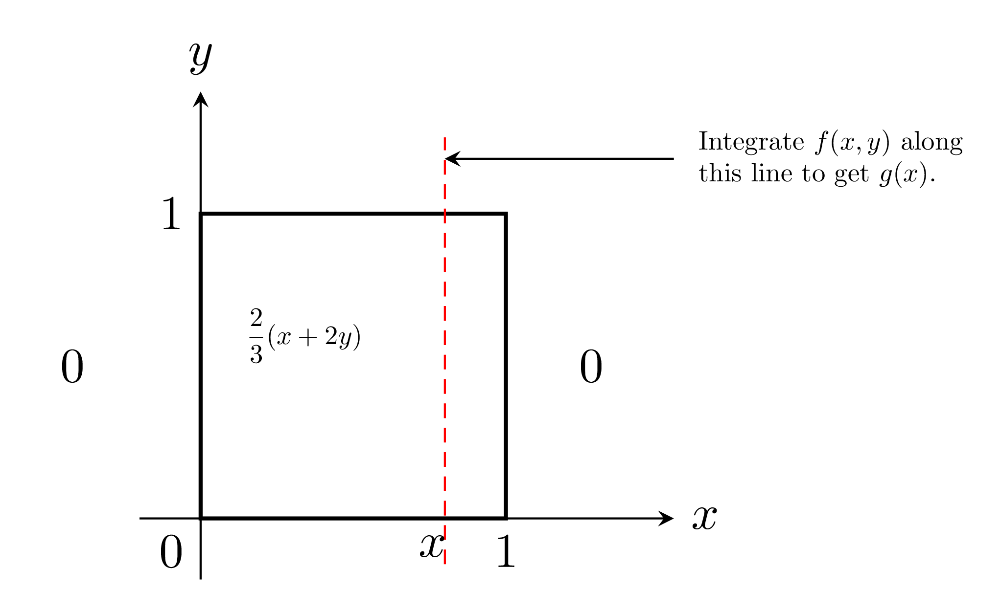

$\S$ 3.6 Marginal Distributions
Recall the example in the last section where I drew 2 tablets at random from a bottle containing 3 aspirins, 2 sedative and 4 laxative tablets.
We let
$X= $ number of aspirins chooen
$Y=$ number of sedatives choom.
We obtain the following joint distribution.
We let
$X= $ number of aspirins chooen
$Y=$ number of sedatives choom.
We obtain the following joint distribution.

Add the numbers in each column and each row.
The totals for each column are the probabilities that $X$ will take on the values $0,1,2$, i.e, we get the probability distribution of $X$ with
$$
P(X=x)=g(x)=\sum_{y=0}^{2} f(x, y) \quad, x=0,1,2 .
$$
Similarly the row totals are the probabilities that $Y$ takes on the values $0, 1,2$ i.e. we get the probability distribution of $Y$ with
$$
P(Y=y)=h(y)=\sum_{x=0}^{2} f(x, y), \quad y=0,1,2
$$
We have the following definition:
Definition).
If $X, Y$ are discrete random variables and $f(x, y)$ is the value of their joint PDF at $(x, y)$, the function$$
g(x)=\sum_{y} f(x, y)
$$
for each $x$ in the range of $x$ is called the marginal distribution of $X$
The function
$$
h(y)=\sum_{x} f(x, y)
$$
for each $y$ in the range of $Y$ is called the marginal distribution of $Y$.
For continuous random variables the sums are replaced by integrals and we have
Definition).
If $X, Y$ are continuous random variables and $f(x, y)$ is the value of a joint PDF at $(x, y)$, the function$$
g(x)=\int_{-\infty}^{\infty} f(x, y) d y,-\infty<x<\infty
$$
is called the marginal density of $X$.
The function
The function
$$
h(y)=\int_{-\infty}^{\infty} f(x, y) d x, \quad-\infty<y<\infty
$$
is called the marginal density of $Y$.
Example).
Supp $X, Y$ have joint PDF$$
f(x, y)=\left\{\begin{array}{l}
\frac{2}{3}(x+2 y), \quad 0<x, y<1 \\
0 \quad \text { elsewhere. }
\end{array}\right.
$$
Find the marginal densities of $X$ and $Y$,
Solution).
Density looks like
If $0<x<1$,
$$
g(x)=\int_{-\infty}^{\infty} f(x, y) d y=\int_{0}^{1} \frac{2}{3}(x+2 y) d y=\frac{2}{3}(x+1)
$$
While $g(x)=0$ elsewhere
Similarly, if $0<y<1$
$$
h(y)=\int_{-\infty}^{\infty} f(x, y) d x=\int_{0}^{1} \frac{2}{3}(x+2 y) d x=\frac{1}{3}(1+4 y)
$$
while $h(y)=0$ elsewhere.
Note that $g(x) \geq 0$ everywhere and
Note that $g(x) \geq 0$ everywhere and
$$
\int_{-\infty}^{\infty} g(x) d x=\int_{0}^{1} \frac{2}{3}(x+1) d x=\left[\frac{x^{2}}{3}+\frac{2 x}{3}\right]_{0}^{1}=1
$$
Similarly, $h(y) \geq 0$ everywhere and
$$
\int_{-\infty}^{\infty} h(y) d y=\int_{0}^{1} \frac{1}{3}(1+4 y) d y=\left[\frac{y}{3}+\frac{2 y^{2}}{3}\right]_{0}^{1} = 1
$$
Thus $g, h$ can buth serve as the PDFs of continuous random variables by Theorem 3.5 (p.86).
When we have more than 2 random variables we can talk not only of the marginal distributions of each one, but also of the point marginal distributions of several of them at once.
e.g. If the discrete random variables $X_{1}, \ldots, X_{n}$ have joint PDF $f\left(x_{1}, \ldots, x_{n}\right)$, then the marginal distribution of $X_{1}$ alone is given by
e.g. If the discrete random variables $X_{1}, \ldots, X_{n}$ have joint PDF $f\left(x_{1}, \ldots, x_{n}\right)$, then the marginal distribution of $X_{1}$ alone is given by
$$
g\left(x_{1}\right)=\sum_{x_{2}} \cdots \sum_{x_{n}} f\left(x_{1}, x_{2}, \cdots, x_{n}\right)
$$
('sum out' all the other variables).
for all values in the range of $X_{1}$, while the joint marginal distribution of $X_{1}, X_{2}, X_{3}$ is given by
for all values in the range of $X_{1}$, while the joint marginal distribution of $X_{1}, X_{2}, X_{3}$ is given by
$$
m\left(x_{1}, x_{2}, x_{3}\right)=\sum_{x_{4}} \sum_{x_{5}} \cdots \sum_{x_{n}} f\left(x_{1}, \ldots, x_{n}\right)
$$
(again sum out all the other variables).
For continuous random variables the situation is similar with integrals replacing sums (as usual).
e.g. If $X_{1}, \ldots, X_{n}$ are continuous with joint PDF $f\left(x_{1}, \ldots, x_{n}\right)$, the marginal density of $X_{2}$ alone is given by
e.g. If $X_{1}, \ldots, X_{n}$ are continuous with joint PDF $f\left(x_{1}, \ldots, x_{n}\right)$, the marginal density of $X_{2}$ alone is given by
$$
h\left(x_{2}\right)=\int_{-\infty}^{\infty} \cdots \int_{-\infty}^{\infty} f\left(x_{1}, x_{2}, \ldots, x_{n}\right) d x_{1} d x_{3} \ldots d x_{n},
$$
('integrate out' $x_{1}, x_{3}, \ldots, x_{n}$ )
Which the joint marginal density of $x_{1}$ and $x_{n}$ is given by
Which the joint marginal density of $x_{1}$ and $x_{n}$ is given by
$$
\varphi\left(x_{1}, x_{n}\right)=\int_{-\infty}^{\infty} \cdots \int_{-\infty}^{\infty} f\left(x_{1}, \ldots, x_{n}\right) d x_{2} d x_{3} \cdots d x_{n-1},
$$
(integrate out $x_{2}, \ldots, x_{n-1}$ )
Example).
For the trivariate probability density$$
f\left(x_{1}, x_{2}, x_{3}\right)=\left\{\begin{array}{cl}
\left(x_{1}+x_{2}\right) e^{-x_{3}}, & 0<x_{1}, x_{2}<1,0<x_{2} \\
0 & \text { elscwhere }
\end{array}\right.
$$
(see earlier in $\S 3.4$), find the joint marginal density of $x_{1}$ and $x_{3}$ and the marginal density of $x_{1}$ alone.
Solution).
For $0<x_{1}<1,0<x_{3}$$$
m_{1}\left(x_{1}, x_{3}\right)=\int_{0}^{1}\left(x_{1}+x_{2}\right) e^{-x_{3}} d x_{2}=\left(x_{1}+\frac{1}{2}\right) e^{-x_{3}}
$$
While $m_{1}\left(x_{1}, x_{3}\right)=0$ elsewhere. For $0<x_{1}<1$
$$
\begin{aligned}
g\left(x_{1}\right) & =\int_{0}^{\infty} \int_{0}^{1} f\left(x_{1}, x_{2}, x_{3}\right) d x_{2} d x_{3}=\int_{0}^{\infty} m\left(x_{1}, x_{3}\right) d x_{3} \\
& =\int_{0}^{\infty}\left(x_{1}+\frac{1}{2}\right) e^{-x_{3}} d x_{3}=x_{1}+\frac{1}{2}
\end{aligned}
$$
while $g\left(x_{1}\right)=0$ elsewhere.
Note).
the shortcut$$
g\left(x_{1}\right)=\int_{0}^{\infty} m\left(x_{1}, x_{3}\right) d x_{3}
$$
Which saved us having to (re)do one integration.